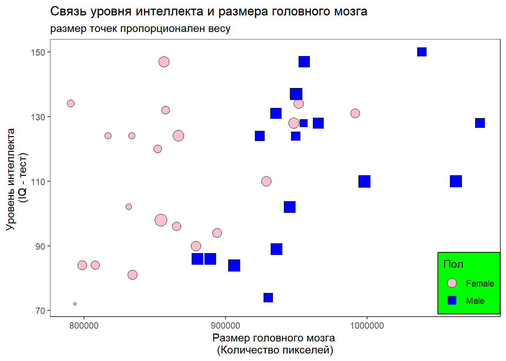

Добро пожаловать в Data Science Club!
Если вы еще не записались на курс, то самое время это сделать:
Гугл-форма для записи на курс DataScience 2022
Для вступления в наш клуб вам надо выполнить несколько заданий.
Важно! Почти все, что нам придется делать, изучая язык обработки данных “R”, потребует некоторого владения английским языком. Если у вас он еще не на самом высоком уровне, то не отчаивайтесь. Вот прекрасный переводчик (лучший на настоящее время), который поможет вам понять, что наисано в том или ином тексте, который нужно будет прочитать: DeepL
Установка R и RStudio
Организация рабочего пространства в среде R
Как получить помощь?
Установка пакетов
Вот ссылки, для упрощения поиска сайтов
Собственно язык R https://cran.r-project.org/bin/windows/base/
Среда Rstudio, которая существенно облегчает и ускоряет работу с R. https://www.rstudio.com/products/rstudio/download/
Найдите как называется первый параметр функции aes() из пакета “ggplot2”.
Ответ надо будет вписать вот в эту гугл-форму
Уважаемые члены нашего клуба!
Вот видео запись нашего занятия
Задание № 2
Ваша задача - разобраться с тем, как создаются пользовательские функции на языке R. Разобравшись с этим, вам надо будет написать функцию, которая решала бы простейшие уравнения вот такого вида:
\[ a + b \cdot x = c \\ x = \frac{c-a}{b} \]
Эта функция должна работать следующим образом.
# Решение простейшего уравнения с помощью пользовательской функции
eq(a = 1, b = 2, c = 3)## [1] "Решение: x = 1"В качестве решения вам нужно будет заполнить вот эту гугл-форму.
Внимание! Если вы еще не разобрались, как сделать так, чтобы ваша функция выдавала текстовое сообщение “Решение: x =”, то можно пока обойтись просто выводом значения \(x\).
Для того, чтобы отработать навыки работы с графическим пакетом ggplot2 предлагается посмотреть вот это видео, которое создали Алена Евдокимова и Рената Нематова, когда они еще сами изучали R.
NB! Что-то подобное надо будет сделать и вам, но на другие темы.
Ну а в качестве задания вам надо будет визуализировать данные из вот этого датасета. Это данные, которые демонстрируют результаты анализа связи размера головного мозга человека (Переменная MRINACount, количество пикселей на срезе, полученном на МРТ) и уровня его интеллекта по результатам теста на IQ (Переменная PIQ). Кроме того в базе данных есть еще результаты измерения веса и роста испытуемых.
Вам нужно будет написать код, который в точности воспроизведет вот такую картинку.

Если у вас какие-то вещи не получились, то присылайте код, который создаст картинку, максимально похожую на ту, что приведена выше.